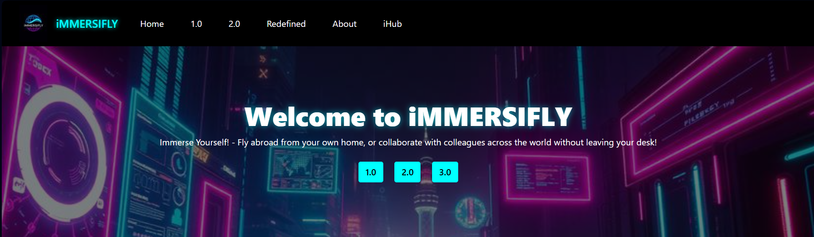
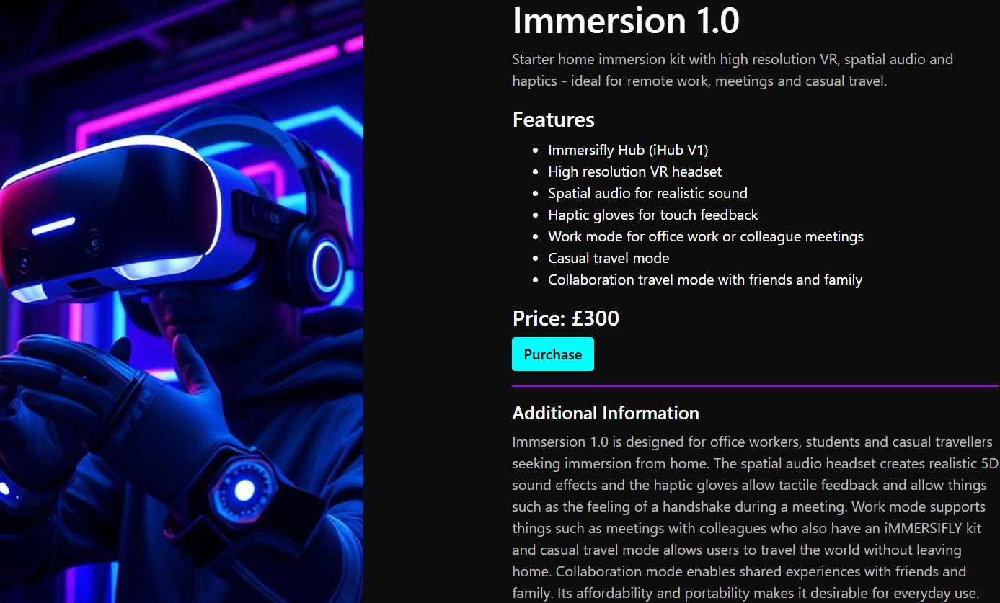
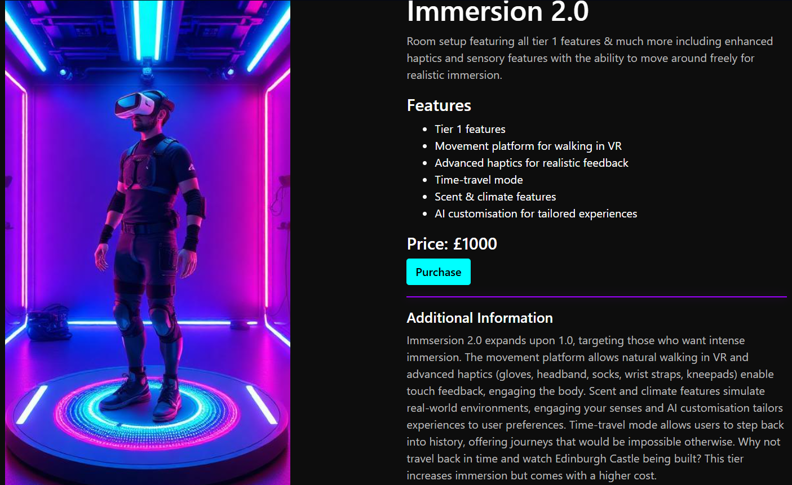
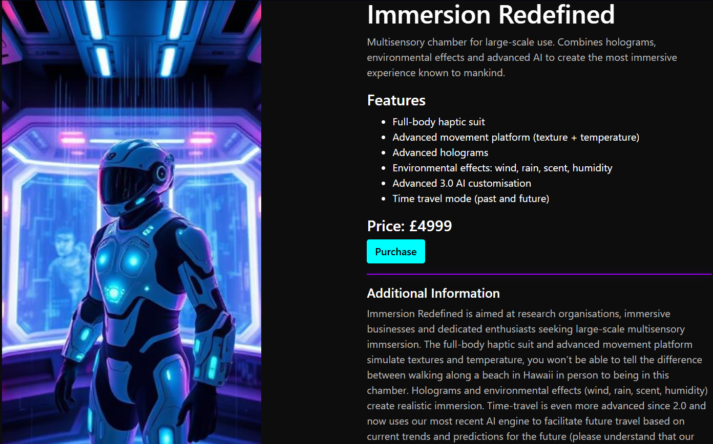
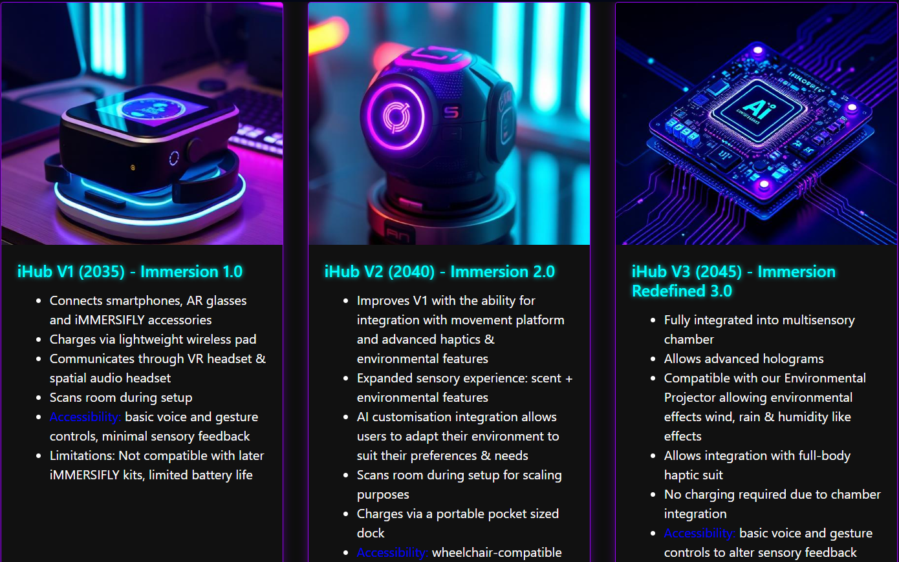
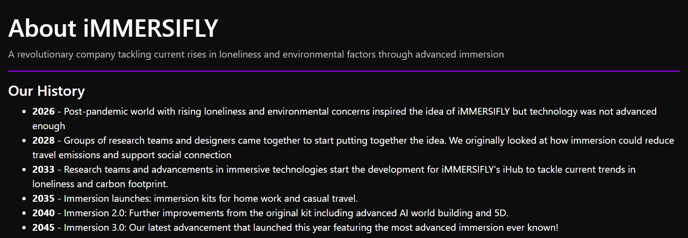
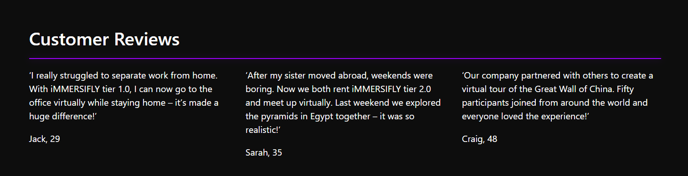

Project
iMMERSIFLY is a speculative concept website that imagines what a futuristic website for a business in the year 2045 would look like. The business “iMMERSIFLY” specialises in immersive multi-sensory experiences using futuristic immersive technologies to reflect how digital interaction and everyday life may evolve in the future.
Tools
HTML (Bootstrap)
CSS
Python (Flask)
This project focused on designing and developing a promotional and informational website for a fictional futuristic business specialising in the immersive technology space. The website offers three different tiers of immersive experiences, each tier represents advancements in technology across the years 2035, 2040 and 2045. Each tier was designed to respond to potential future challenges such as emerging travel, social, environmental and economic issues.

Tier 1.0 (2035)

Tier 2.0 (2040)

Tier 3.0 (2045)
The website was built using Python (Flask) for routing and templating, with HTML (Bootstrap) used to create a responsive layout and CSS was utilised to achieve the futuristic aesthetic featuring vibrant colours and glowing elements. I also learned more about immersive technologies through research into how they can be used currently and how they might be used in the future as these technologies advance to address worldwide trends such as remote work.
As the business was conceptual, I had to think carefully about how the system would actually function as well as what a business in the year 2045 would look like. I wanted to create a believable ecosystem of products which is why I introduced the “iHub” device which connects the different technologies together. I also developed a full backstory section with information on how the business came to life starting from 2026 up until 2045. This helped ground the concept and make it feel more realistic and believable.

iHub device (versions 1-3)

About page (company history)
I used fictional ethnography which helped me come up with user scenarios and use cases which featured on the website as user reviews. This helped me picture how each tier might be used in real-world scenarios. The inspiration for “iMMERSIFLY” came from the social, behavioural and environmental changes that emerged during and after the Covid-19 pandemic. This concept business aimed to address some of the issues stemming from these changes such as restricted travel and loneliness. iMMERSIFLY offers an immersive alternative to physical travel while sill enabling social connection and collaboration. The concept also touches on tensions around AI advancements, the first two tiers rely on an AI chatbot for setup, while the most advanced and expensive tier counters this by introducing human assistance during setup.

Fictional user reviews based on ethnography
I looked at current trends in remote work, travel costs, isolation and environmental pressures and tried to predict how these might evolve through 2035-2045. I enjoyed experimenting with Python (Flask), HTML, and CSS until I achieved the 2045 immersive technology aesthetic I was going for. Instead of building a database, I passed hardcoded data into jinja templates as a fully functional database didn’t seem necessary and would only introduce unnecessary complexity. In a real-world context, to ensure scalability and security, a fully functional database would’ve been utilised.
One of the key learning points this project taught me was how to balance creative ideas with practical design considerations. Additionally, I have a better understanding around speculative projects and how to balance realistic predictions for the future as well as considering user needs such as accessibility factors. Through research, I also gained a better understanding around how the body might interact with immersive technologies in the future and how they can be used to address emerging social, travel and work trends.